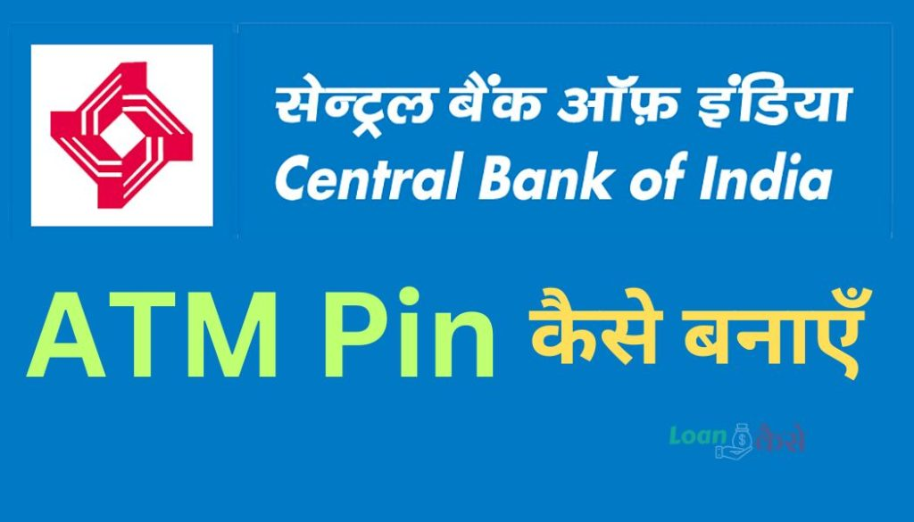

परिचय :-
Central Bank Of India का ATM (एटीएम) कार्ड उपयोग करके आप अपने Bank Account से पैसे निकाल सकते हैं और विभिन्न बैंकिंग सेवाओं का लाभ उठा सकते हैं। यहां तक कि अपनी आवश्यकतानुसार आप विभिन्न बैंकों के ATM मशीनों का उपयोग भी कर सकते हैं। लेकिन, Central Bank Of India के ATM कार्ड का प्रयोग करने के लिए आपको ATM PIN की आवश्यकता होती है। इस लेख में, हम आपको Central Bank Of India के ATM PIN कैसे Generate करते हैं, इसका सटीक तरीका बताएंगे।
Central Bank Of India के ATM PIN को Generate करने का तरीका
Central Bank Of India के ATM PIN को Generate करने के लिए निम्नलिखित चरणों का पालन करें:
यह भी पढ़े :-
- SBI में ECS ACH Return Charges क्या हैं? जानिए इसकी पूरी जानकारी
- Bulk Posting क्या होता है? (Bulk Posting Meaning In Hindi)
- SBI Credit Card band kaise kare? ऐसे करे अपना credit कार्ड बंद
{kind=link}

1. नजदीकी Central Bank Of India ATM मशीन पर जाएं
सबसे पहले, आपको अपने नजदीकी Central Bank Of India ATM मशीन पर जाना होगा। यहां आपको अपना ATM कार्ड डालने की आवश्यकता होगी और फिर आपको अपना भाषा चयन करना होगा। आप अपनी पसंदीदा भाषा को चुन सकते हैं, जैसे हिंदी या अंग्रेजी।
2. “PIN Generate” विकल्प का चयन करें
ATM मशीन पर जब आपकी पसंदीदा भाषा का चयन हो जाए, तो आपको “PIN Generate” या “पिन Generate करें” विकल्प का चयन करना होगा। इस विकल्प को चुनने के बाद, ATM मशीन आपसे कुछ अतिरिक्त जानकारी पूछेगी।
3. अपना खाता विवरण दर्ज करें
ATM मशीन आपसे आपके Bank Account से संबंधित कुछ जानकारी पूछेगी। आपको अपना खाता नंबर या CIF(Customer Identification Number ) नंबर दर्ज करना होगा और अन्य आवश्यक जानकारी दर्ज करनी होगी।
4. Mobile Number दर्ज करें
इसके बाद आपको अपने Centeral Bank ऑफ़ India के कहते में जो Mobile Number दर्ज जेल उसको enter करना है .
5. OTP (One Time Password) का चयन करें
उसके बाद आपको OTP Generation के buuton को दबाना है यह दबाने के बाद एटीएम मशीन से आपको एक Receipt मिलेगा और आपके मोबाइल पर एक OTP आएगा याद रहे ,ये otp मात्र 24 घंटे तक वैध होगा ।
6. फिर से ATM Card को मशीन में डाले
पुनः ATM कार्ड को मशीन में डालने के बाद आपको फिर से अपने खाते की जानकारी डालनी है और इस बार आपको New pin Generation पर क्लिक करना है .यहाँ आपको पहले अपना OTP दर्ज करना होगा .
7. नया ATM PIN चुनें
जब आपकी OTP सत्यापित हो जाएगी, तो ATM मशीन आपसे नया ATM PIN चुनने का अनुरोध करेगी। आपको एक नया, सुरक्षित और सुगम पिन चुनना होगा। याद रखें, अपना पिन याद रखें और उसे किसी के साथ साझा न करें।
8. ATM PIN की पुष्टि करें
अंत में, ATM मशीन आपसे अपने नए ATM PIN की पुष्टि करने के लिए आवश्यकता होगी। इससे आपके खाते की सुरक्षा सुनिश्चित होगी और आप आसानी से अपने Central Bank Of India के ATM कार्ड का उपयोग कर सकेंगे।
इस तरीके से, आप Central Bank Of India के ATM PIN को Generate कर सकते हैं और अपने खाते की सुरक्षा सुनिश्चित कर सकते हैं। यह आपको अपनी बैंकिंग सुविधाओं का लाभ उठाने में मदद करेगा और आपको अपने खाते की स्थिति के बारे में सटीक जानकारी प्रदान करेगा।